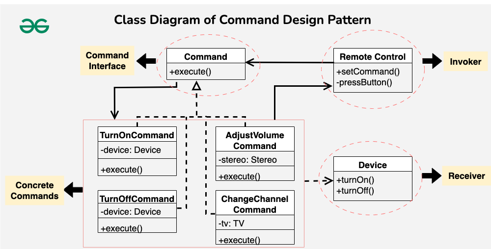

The Command Design Pattern is a behavioral design pattern that turns a request into a stand-alone object, allowing parameterization of clients with different requests, queuing of requests, and support for undoable operations(action or a series of actions that can be reversed or undone in a system).
Command Interface The Command Interface
is like a rulebook that all command classes follow. It
declares a common method, execute(),
ensuring that every concrete command knows how to
perform its specific action. It sets the standard for
all commands, making it easier for the remote control to
manage and execute diverse operations without needing to
know the details of each command.
Concrete Command Classes Concrete Command Classes are the specific commands, like turning on a TV or adjusting the stereo volume. Each class encapsulates the details of a particular action. These classes act as executable instructions that the remote control can trigger without worrying about the nitty-gritty details of how each command accomplishes its task.
Invoker (Remote Control) The Invoker, often a remote control, is the one responsible for initiating command execution. It holds a reference to a command but doesn’t delve into the specifics of how each command works. It’s like a button that, when pressed, makes things happen. The remote control’s role is to coordinate and execute commands without getting involved in the complexities of individual actions.
Receiver (Devices) The Receiver is the device that knows how to perform the actual operation associated with a command. It could be a TV, stereo, or any other device. Receivers understand the specific tasks mentioned in commands. If a command says, “turn on,” the Receiver (device) knows precisely how to execute that action. The Receiver-Command relationship separates responsibilities, making it easy to add new devices or commands without messing with existing functionality.

Command Interface: The Command
interface declares a method, often named
execute(). This method is meant to
encapsulate a specific operation. The interface sets a
contract for concrete command classes, defining the
execute() method that encapsulates the
operation to be performed.
// Command interface
public interface Command {
void execute();
}
Concrete Command Classes: Concrete
command classes implement the Command interface. Each
class encapsulates a specific operation related to
devices. Each concrete command class provides a specific
implementation of the execute() method,
defining how a particular device operation (turning on,
turning off, adjusting volume, changing channel) is
executed.
// Concrete command for turning a device on
public class TurnOnCommand implements Command {
private Device device;
public TurnOnCommand(Device device) {
this.device = device;
}
@Override
public void execute() {
device.turnOn();
}
}
// Concrete command for turning a device off
public class TurnOffCommand implements Command {
private Device device;
public TurnOffCommand(Device device) {
this.device = device;
}
@Override
public void execute() {
device.turnOff();
}
}
// Concrete command for adjusting the volume of a stereo
public class AdjustVolumeCommand implements Command {
private Stereo stereo;
public AdjustVolumeCommand(Stereo stereo) {
this.stereo = stereo;
}
@Override
public void execute() {
stereo.adjustVolume();
}
}
// Concrete command for changing the channel of a TV
public class ChangeChannelCommand implements Command {
private TV tv;
public ChangeChannelCommand(TV tv) {
this.tv = tv;
}
@Override
public void execute() {
tv.changeChannel();
}
}
Receiver Classes (Devices): The Device
interface declares methods related to device
functionality, such as turnOn() and
turnOff(). This interface sets a contract
for device classes, defining common operations that
concrete devices should support.
// Receiver interface
public interface Device {
void turnOn();
void turnOff();
}
// Concrete receiver for a TV
public class TV implements Device {
@Override
public void turnOn() {
System.out.println("TV is now on");
}
@Override
public void turnOff() {
System.out.println("TV is now off");
}
public void changeChannel() {
System.out.println("Channel changed");
}
}
// Concrete receiver for a stereo
public class Stereo implements Device {
@Override
public void turnOn() {
System.out.println("Stereo is now on");
}
@Override
public void turnOff() {
System.out.println("Stereo is now off");
}
public void adjustVolume() {
System.out.println("Volume adjusted");
}
}
Invoker Class (Remote Control): The
invoker class holds a reference to a Command object and
triggers its execution through the
execute() method. The invoker doesn’t know
the specific details of the command or the devices. It
simply calls the execute() method on the
current command, allowing for flexible and dynamic
control over different devices.
// Invoker
public class RemoteControl {
private Command command;
public void setCommand(Command command) {
this.command = command;
}
public void pressButton() {
command.execute();
}
}
Client:
// Example usage
public class Client {
public static void main(String[] args) {
// Create devices
TV tv = new TV();
Stereo stereo = new Stereo();
// Create command objects
Command turnOnTVCommand = new TurnOnCommand(tv);
Command turnOffTVCommand = new TurnOffCommand(tv);
Command adjustVolumeStereoCommand = new AdjustVolumeCommand(stereo);
Command changeChannelTVCommand = new ChangeChannelCommand(tv);
// Create remote control
RemoteControl remote = new RemoteControl();
// Set and execute commands
remote.setCommand(turnOnTVCommand);
remote.pressButton(); // Outputs: TV is now on
remote.setCommand(adjustVolumeStereoCommand);
remote.pressButton(); // Outputs: Volume adjusted
remote.setCommand(changeChannelTVCommand);
remote.pressButton(); // Outputs: Channel changed
remote.setCommand(turnOffTVCommand);
remote.pressButton(); // Outputs: TV is now off
}
}